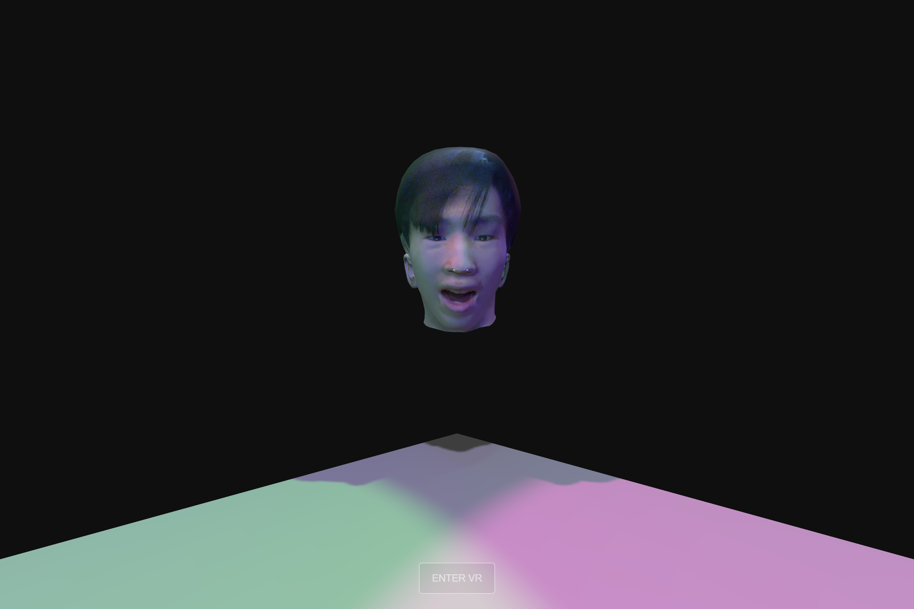
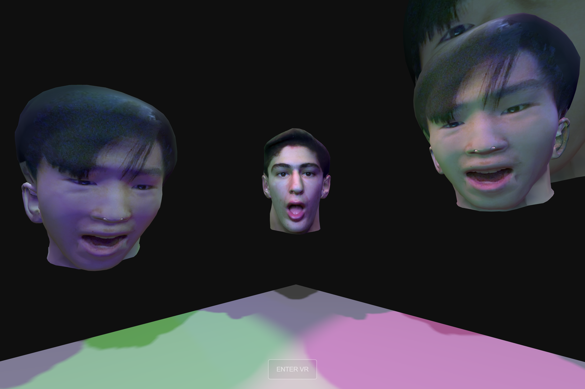
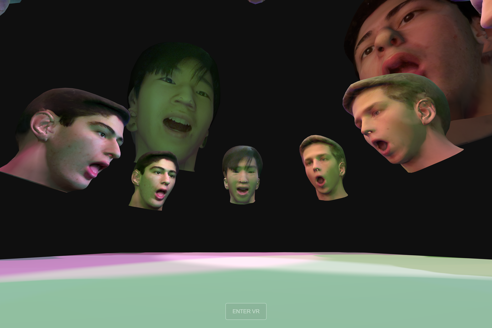
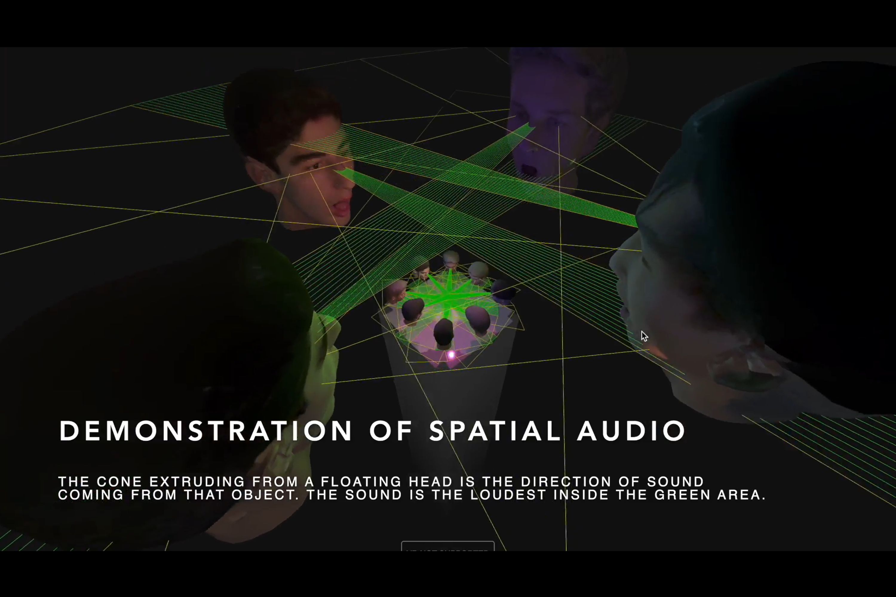
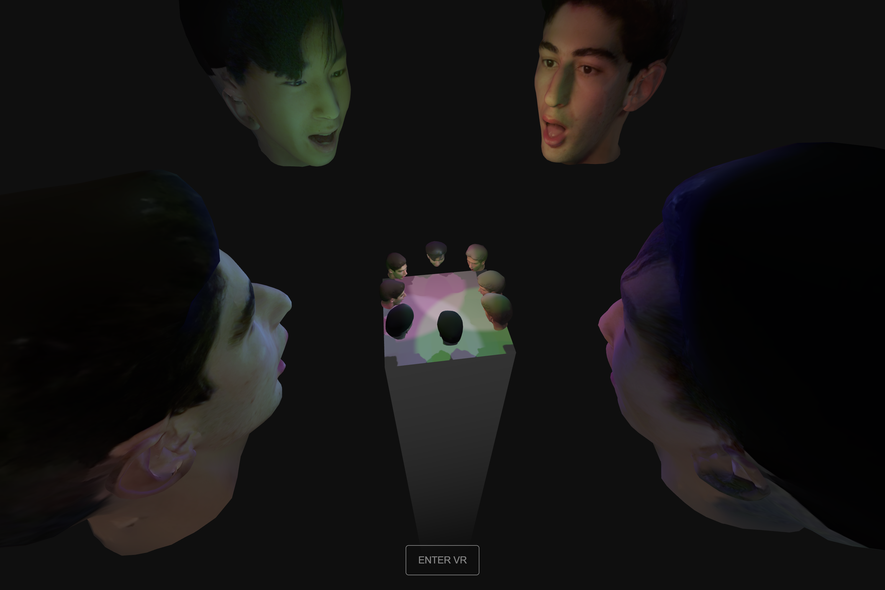

Back to home page
Source code
VRChoir
VRChoir is a Virtual Reality music experience created using ThreeJS, in3D, Blender, and Ableton Live. This project is my first attempt at creating a VR music experience and demonstrates my ability to use a combination of modern technologies, my understanding of 3D geometry, and shows potential for future music 3D experiences.
Please watch the video above to view this project and see how it works or demo it yourself at the live project link below.
Live ProjectSource code
Technologies
in3D - 3D Scanner
I used this mobile app to create digital 3D avatars of myself and my two roommates which I exported to edit in Blender.Blender - 3D Creation Software
I only wanted the heads of the 3D avatars from in3D so I used Blender "chop" the heads off of the avatars and exported them as gLTFs to use in ThreeJS.Ableton Live - Digital Audio Workstation
I used Ableton to sample the various "Swan"s and "Lee"s and pitch shifted these samples into different notes in a Sus7 chord to create a virtual ambient choir.ThreeJS - In-browser 3D JavaScript Library
ThreeJS allowed me to render this 3D scene on a webpage using JavaScript code. The components consist of a VR camera, main stage, floating life-like heads, and various lights. I also used ThreeJS Positional Audio to attach HTML audio elements to the floating heads to give the allusion that each head is actually singing from their space in 3D.Photos:



